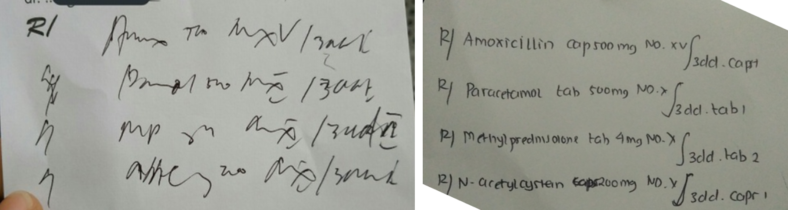

Teks biasa atau plain text merupakan hal yang penting dalam dunia komunikasi, baik di dunia nyata maupun di dunia komputer. Apa yang ingin disampaikan harus tertulis dengan jelas. Kenapa? agar bisa dimengerti.
Coba lihat diantara tulisan ini, mana yang lebih mudah dipahami?

Gambar diatas merupakan screenshot jawaban Quora yang saya ambil. Yang kiri merupakan tulisan aslinya dan yang kanan setelah ditulis ulang. Jauh banget kan perbedaannya.
Secara teknis markdown adalah sintaks ringan untuk merubah teks biasa menjadi teks yang berformat.
Sintaksnya sederhana. Saya coba tabelkan beberapa penggunaannya seperti ini:
| Penggunaan | Sintaks | Hasil |
|---|---|---|
| Heading 1 dan seterusnya |
|
Heading 1Heading 2Heading 3 |
| Menulis tebal (bold) | **tulisan tebal** |
tulisan tebal |
| Menulis miring (italic) | *tulisan miring* |
tulisan miring |
| Menulis coret (strikethrough) | ~~tulisan coret~~ |
|
| Link ke url | [website ini keren!](irpanchumaedi.com) |
website ini keren! |